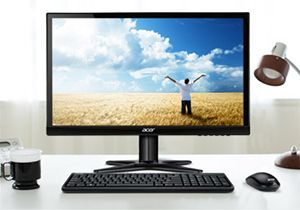
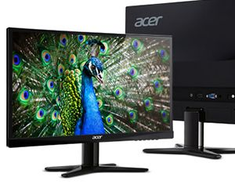
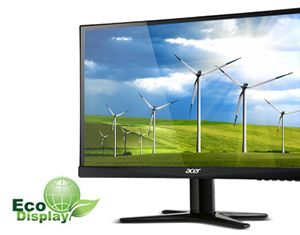

Монитор LED IPS Acer, 23.8'', Wide, Full HD, DVI, HDMI, Zero Frame, 4 ms, Черен, G247HYLbidx

Стандартна гаранция: 12 месеца
В наличност | Безплатна Доставка
Цена: 12312
Тънък и елегантен
Благодарение на футуристичния стил на серията G7 и тънкия Zero Frame дизайн пестите място на вашето бюро. Това ви позволява да поставите няколко монитора G7 един до друг, за да получите един голям екран. Изберете го в цвят, който идеално да подхожда на стила ви и накланяйте дисплея от -5 до 15 градуса за по-голямо удобство при гледане.
Реална картина
Благодарение на IPS технологията1, 2 изображенията оживяват на мониторите от серията G7. Тя осигурява ярки цветове и снежно бели тонове дори при гледане под голям ъгъл. Моделът G247HL предлага и VA технология на панела, която помага за възпроизвеждането на по-дълбоки нива на черното.
Екосъобрасност
Мониторите от серията G7 съответстват на изискванията на RoHS (Директива относно ограничението за употреба на определени опасни вещества) и не съдържат живак. Освен това технологиите Acer EcoDisplay и LED подсветката пестят енергия, за да намалят разходите и да запазят ресурсите на планетата. Освен това Acer използва рециклируеми опаковки, което допълнително намалява вредата върху околната среда.
Дисплей
| Диагонал: | 24 инча |
| Технология: | IPS |
| Аспект изображение: | 16:9 |
| Формат екран: | Wide |
| Времена на отговор: | 4 мс |
| Динамичен контраст: | 100000000:1 |
| Размери пиксел: | 0.267 мм |
| Хоризонтална честота на опресняване: | 30 - 80 kHz |
| Оптимална резолюция: | 1920 x 1080 |
| Осветеност | 250 cd/ m*m |
| Брой цветове: | 16.7 милиона |
| Тегло: | 4,5 кг |
| Консумирана мощност: | 25 W |